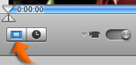
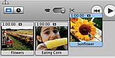

Adding clips to your movie
You can add clips to your movie at any time.
Note: Before adding clips to your movie, it's a good idea to crop them first. Cropping allows you to edit a clip by keeping only the portion of video you like and removing the rest. For more information, see Related Topics below.

To add a clip to your movie:
- Click the Clip Viewer button (shown above).
- Drag clips from the Clips pane to the clip viewer (shown below).
Note: You can also add clips directly from another iMovie HD project, a CD or DVD, or another location on your hard disk.
Tip: To learn how to drag several clips at once, see "Selecting clips."

To add a clip between existing clips in the clip viewer, just drag the clip between the existing clips, and iMovie automatically makes room for it.
You can also add clips by dragging them to the timeline viewer. To show the timeline viewer, click the Timeline Viewer button (a clock) next to the Clip Viewer button.
After you add clips to your movie, you can rearrange them by dragging. You can also drag a clip out of the clip or timeline viewer to the Clips pane, iMovie Trash, another location on your hard disk, iDVD drop zones, another iMovie project, or other applications.
Related Topics
Cutting, copying, and pasting clips
 Was this page helpful? Send feedback.
Was this page helpful? Send feedback.